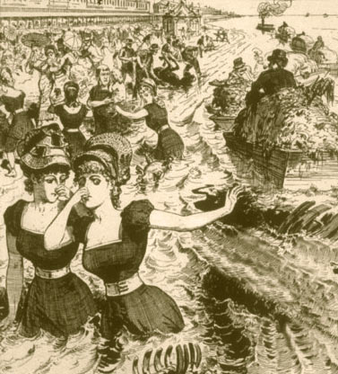

Remova Todos Os Traços do/a Ex-
Da Sua Vida
Érealmente óbvio, mas é tão difícil de fazer: você tem que se livrar de qualquer coisa que lhe lembre do ex. Quadros, cartas, presentes, roupas que você comprou com ele/ela, aquele travesseiro especial que lhe lembra dele/dela.
Eu sei como é duro. Mas é muito importante. Qualquer coisa que acarrete memórias de seu ex é prejudicial para você. Como as imagens do exame de resson'ncia magnética mostram, lembretes de seu ex ativam as mesmas áreas de seu cérebro que a dor física ativam, então olhar para qualquer lembrança do seu ex é literalmente cortar a sua ferida já aberta de novo e de novo. Você significativamente prolonga a sua dor e retarda a sua cura.
O que quer que seja, livre-se disso. Jogue fora, dê para a caridade, queime, o que quer que você faça, livre-se de tudo. Qualquer traço do ex que você tiver por perto só vai torturar e prolongar a sua recuperação.
Não encontre o seu ex-
Se você tiver coisas do ex que você precisa devolver, empacote e peça a um amigo para entregar para que você não tenha que ver o seu ex. É realmente importante não entregar você mesma ou permitir que o seu ex pegue pessoalmente. Você não quer qualquer contato com o ex, e especialmente nenhum contanto envolvendo a devolução de coisas: só vai levar a situações horríveis e muito mais pesar e sofrimento para você.
(E seja uma boa pessoa: se você tiver coisas de seu ex que você souber que ele ou ela quer de volta, não guarde ou jogue fora, não importando quão abalada você esteja.)
Eu gosto de manter memórias, então jogar fora algumas das coisas que eu tinha relacionado a "nós" simplesmente não era uma opção.
Ao invés disso, eu pus tudo em uma caixa. Depois, sabendo que não havia jeito de ser forte o suficiente para resistir olhar, eu dei a caixa para um amigo para guardar, com as instruções de não devolver até que eu estivesse 100%, completamente e totalmente curada, não importando o quanto eu implorasse.
Delete ou tranque
todos os registros eletrônicos
Arquivos de computador e memórias de telefone são outra grande questão. Eu tinha tantas fotos, cartas, emails, vídeos e gravações do meu ex e eu. O drive do meu computador foi essencialmente devotado inteiramente a "nós". E o meu telefone era só uma coleção de sms's e fotos do meu ex.
Duro como foi para mim, eu pus tudo relacionado ao meu ex em um pendrive e dei a um amigo para guardar para mim até que eu me recuperasse.
Outra ideia que eu tenho visto é colocar tudo em uma pasta criptografada no computador, e um amigo tranca com uma senha que você não saiba.
Outra maneira, depois de você já ter armazenado todos os arquivos em um lugar seguro onde você não possa acessá-los, delete tudo do seu computador. Certifique-se de usar um programa seguro que retalhe e apague como Eraser, CC Cleaner ou FileShredder... Caso contrário, os arquivos estarão ainda lá no seu computador e você poderá recuperá-los; confie em mim que em algum momento ruim, a tentação será arrasadora.